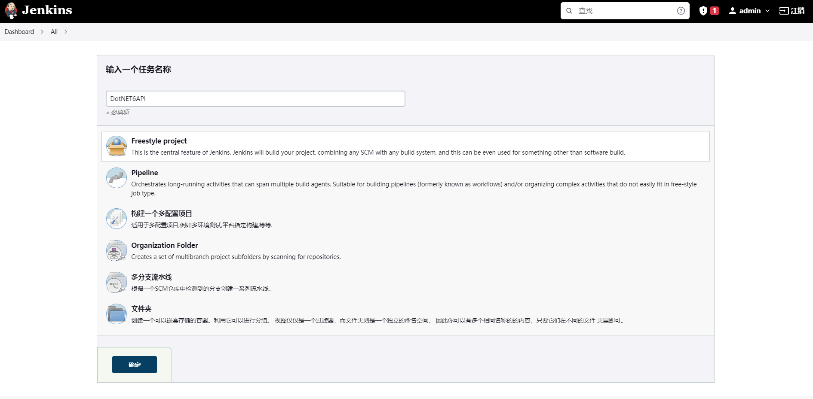
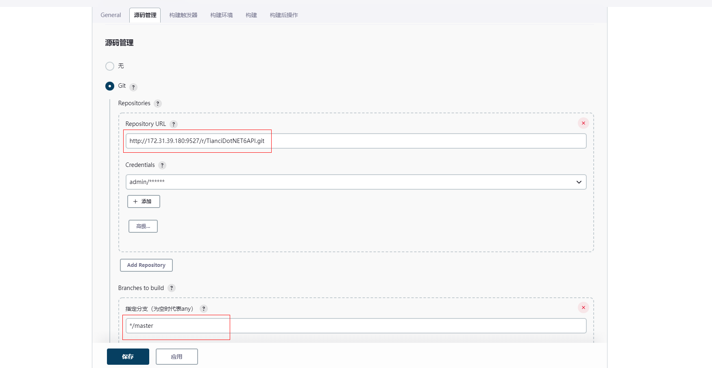
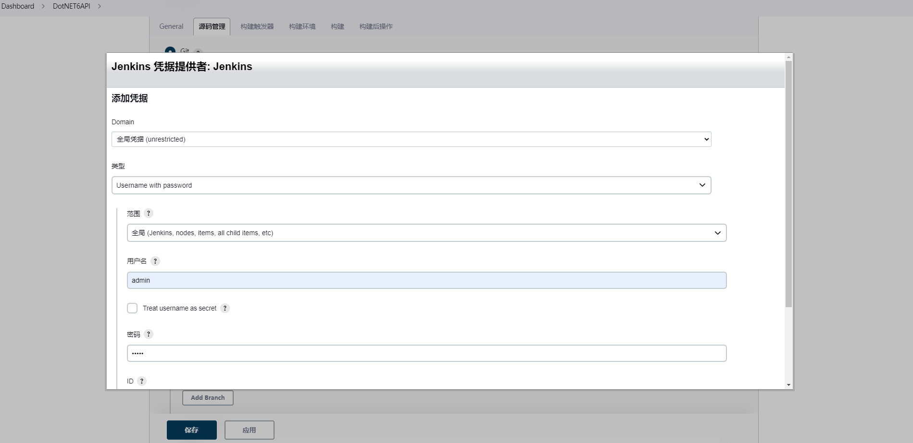
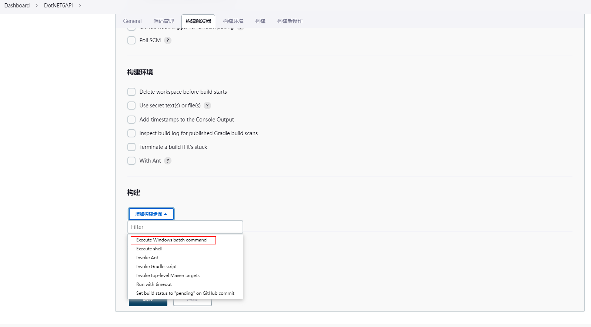
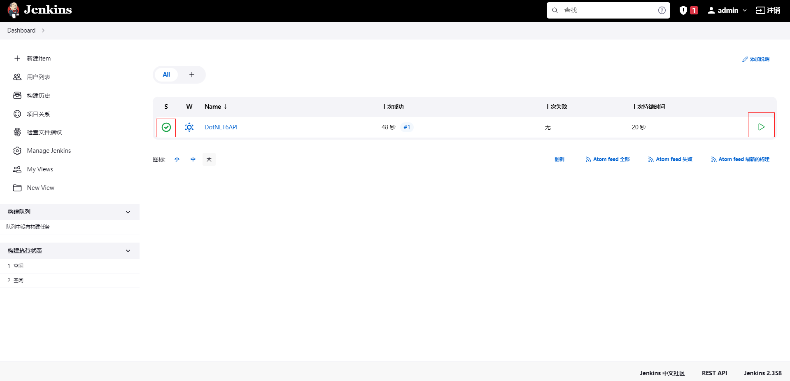
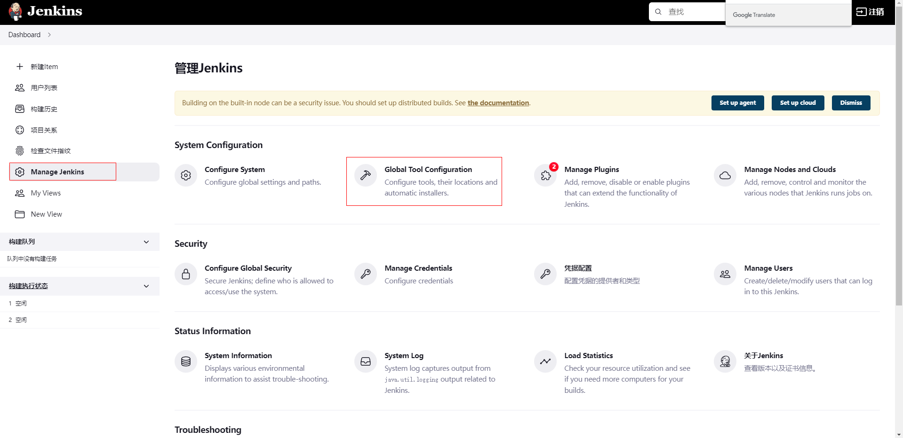
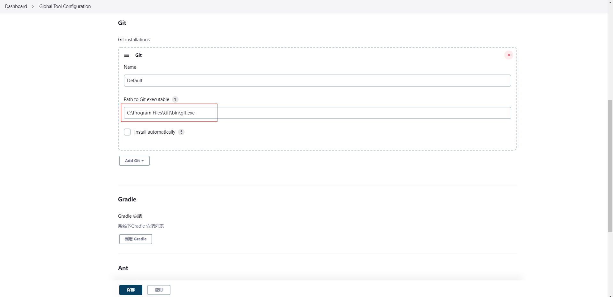

# 通过 Jenkins 和 GitBlit 联合完成半自动化部署
# 服务器需要安装相应的环境
Git 环境
DotNET6 运行时环境
DotNET6 编译环境 SDK
JDK11
Jenkins 安装包
# 首先打开教程安装 GitBlit 并配置 Java 环境
# 安装 DotNET6 运行时环境和 SDK，并安装 Git
# 通过官方安装 Jenkins 流程进行安装
# 所有环境搭建完毕访问所配置的端口进入 Jenkins 安装系统推荐插件，进入系统并修改管理员密码
# 新建项目，选择 Freestyle project

# 选择源码管理 Git 输入 Git 仓库地址并设置分支
# 因为 GitBlit 和 Jenkins 都是在同一服务器所以我用私网 IP

# 创建 Credentials 也就是 Git 用户信息不然无法拉取代码（只需要填写账号和密码）

# 拉到倒数第二个构建，选择执行 Windows cmd 命令

# 输入以下命令
dotnet restore --还原 | |
dotnet build --编译 | |
C:\Windows\System32\inetsrv\appcmd.exe stop site "DotNET6API" --停止IIS中的指定网站 | |
C:\Windows\System32\inetsrv\appcmd.exe stop apppool /apppool.name:"DotNET6API" --停止IIS中的指定应用程序池 | |
dotnet publish -o "C:\WebFile\DotNET6API" --将编译文件发布到指定目录下 | |
C:\Windows\System32\inetsrv\appcmd.exe start site "DotNET6API" --启动IIS中的指定网站 | |
C:\Windows\System32\inetsrv\appcmd.exe start apppool /apppool.name:"DotNET6API" --启动IIS中的指定应用程序池 |
# 配置完成点击构建即可看到完成状态

# 注意事项（如果 Git 报错：Failed to connect to repository : Error performing command: git.exe ls-remote -h xxxxxxx HEAD）
# 说明 Git.exe 找不到对应地址，需要将 Git 绝对路径进行修改（输入服务器 Git 安装地址默认在 C 盘 Program Files 文件夹下）

